01 / Overview
Overview
MyQuiz app is created for fun, surveys and polls, where users can earn points and badges after successfully completing a quiz. They find different kinds of quiz for fun and enjoy them with their colleagues and friends. HR can use this app for mandatory surveys and can also take polls.
02 / Challenges
Challenges
- Multiple platforms are used by people for quizzes and surveys.
- Even for a mandatory quiz, multiple reminders need to be sent.
- There is a lack of encouragement to complete a mandatory quiz.
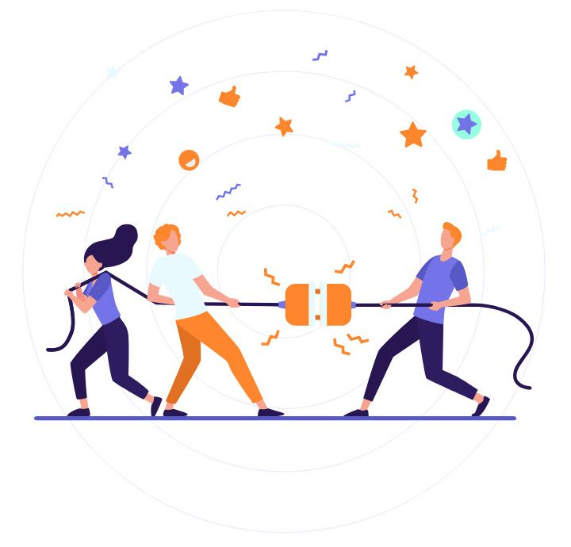
03 / Key idea
What is behind it
Create a single platform where everyone can play a quiz and create a quiz. Make the user experience better, so everyone can easily use the platform. Customised quiz creation and a global leaderboard. Encourage users with points and badges to complete mandatory quizzes.
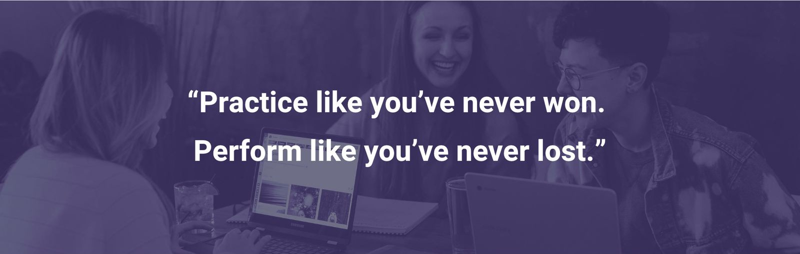
04 / Solution
Goals & objectives
Our goal in this project was to make the app more flexible and interactive, and to help users know the importance of completing surveys and polls.
- Make a universal platform for making and playing quizzes
- Create customised quizzes
- Clean, simple and easy UI and experience
- Encourage users using gamification
05 / Approach
Research
In this phase we connected with multiple users in the organisation to understand their needs and behaviours, and to gain a deeper knowledge of the pain points. After user interviews we collected valuable insights.
- Asked users about the quiz topics they would like to play
- Asked which device they like to use this app on: mobile or web
- Asked what they like most once they have completed a quiz: points, badges etc.
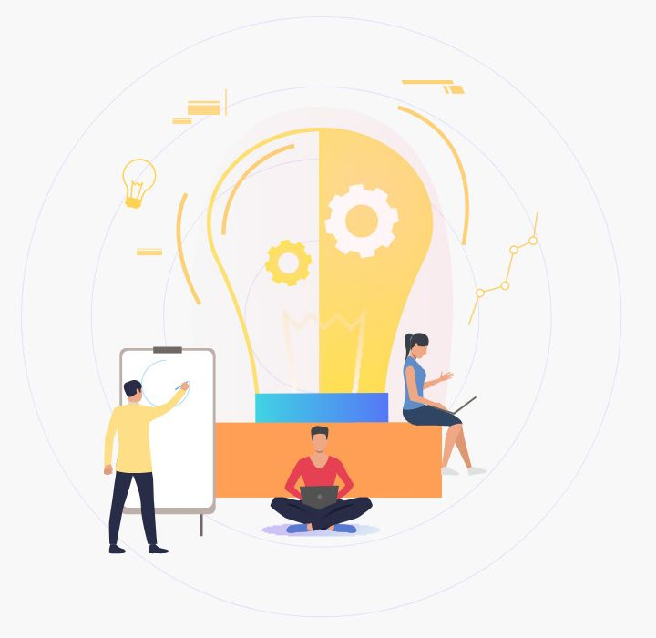
Insights
- 52%of users want to learn new technical things using this quiz app
- 70%of users want to create their own questionnaires for fun activities and surveys
- 32%of users want to make it a generic quiz app where they can only play the quiz
06 / Palette
Design system
Color
Multiple colours are used to make the app more trendy and draw attention to different aspects of the app.
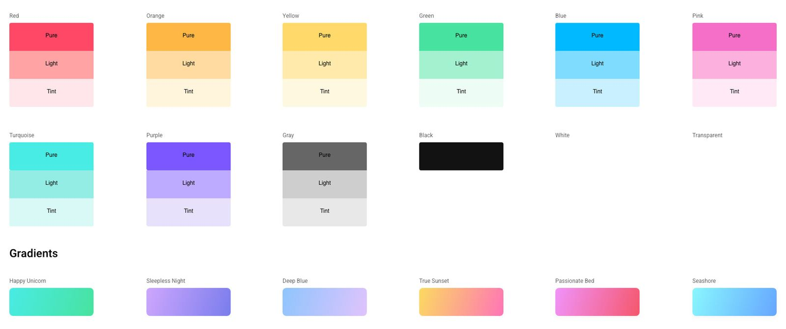
Typography
As it is a native application, we used the iOS and Android default fonts.
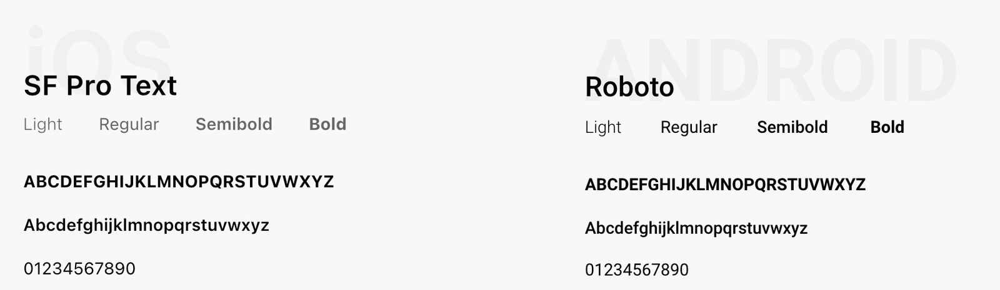
Iconography
Icons are the most communicative form of visual language. A customised icon set is more meaningful, matches the overall theme and is more engaging than regular icons.
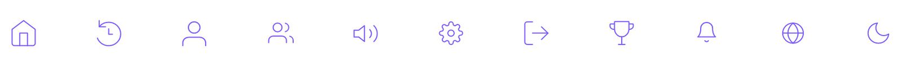
07 / Process
User flow
The user flow was created for a simple understanding of the app concept. As the app targets a generic audience across the whole hierarchy, we wanted to make the process easy and simple.
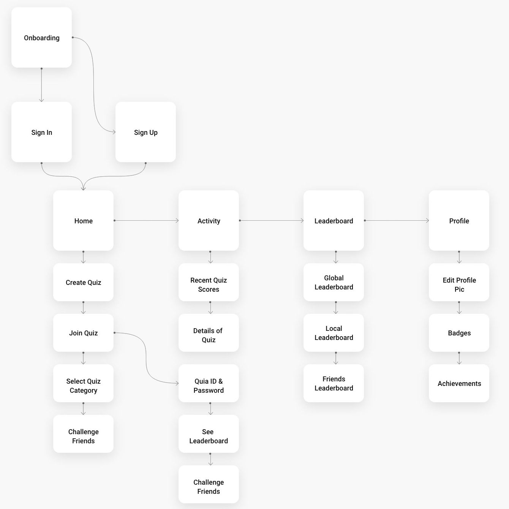
08 / UI design
Visual screens
Final result of the project.
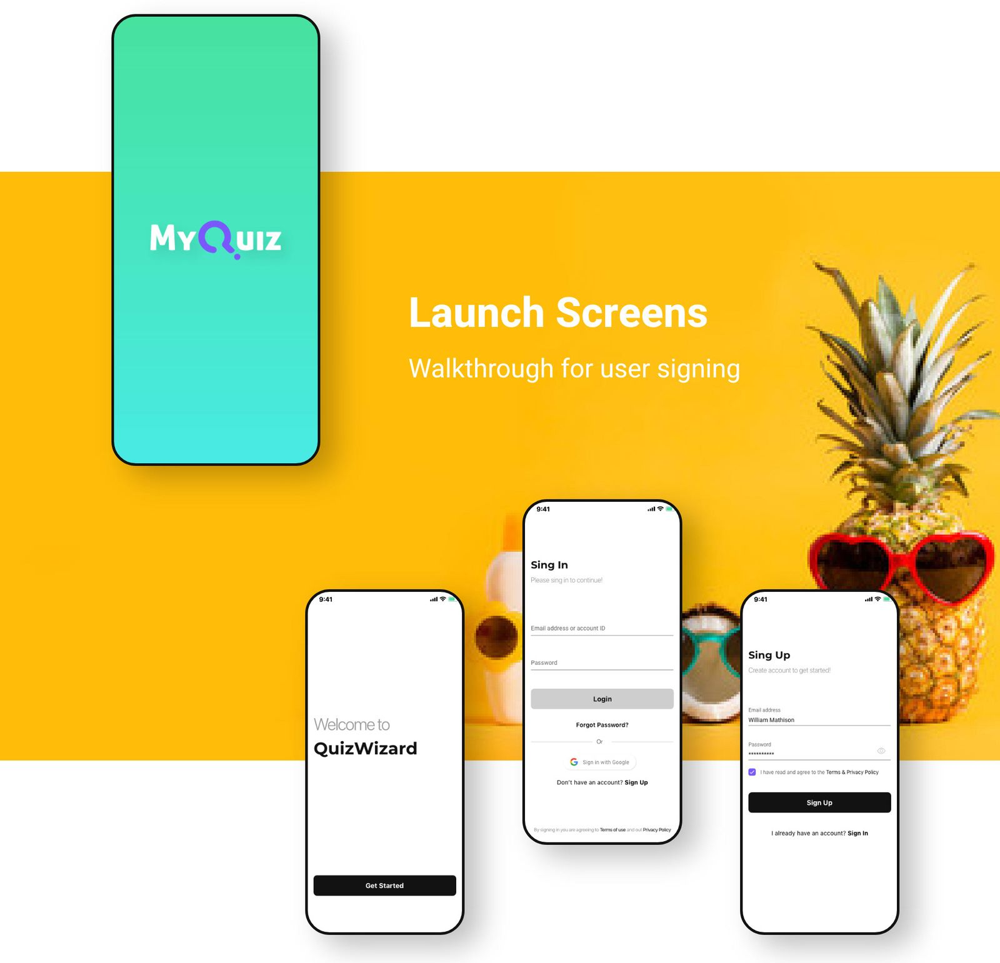
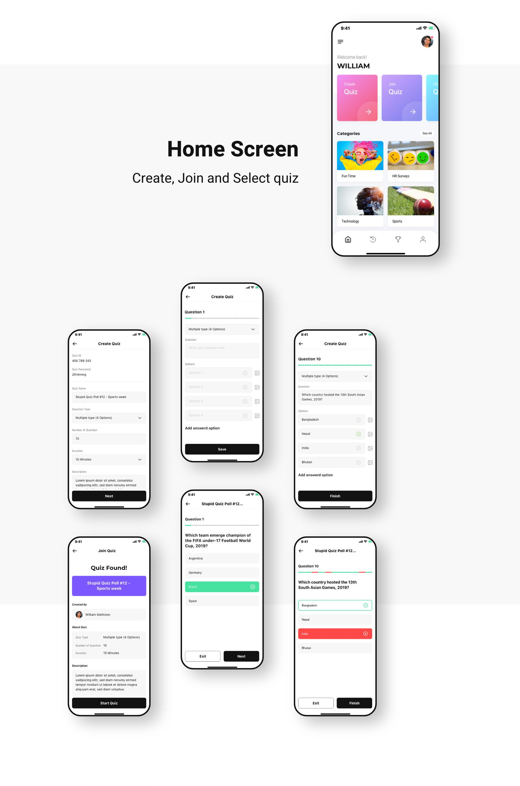
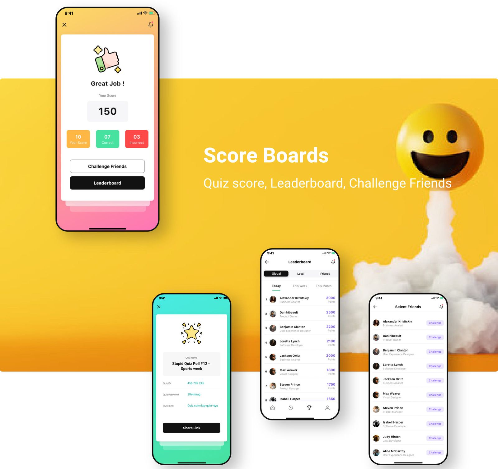
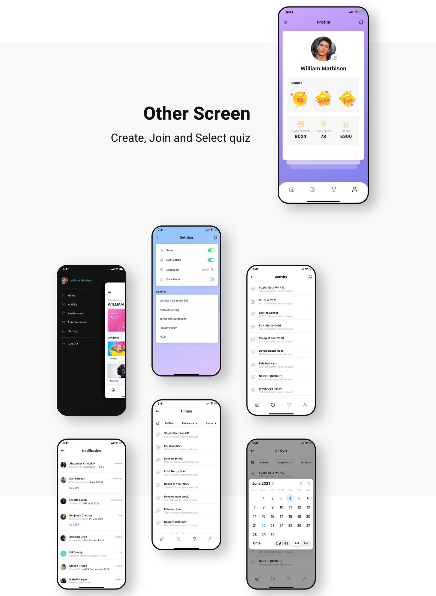